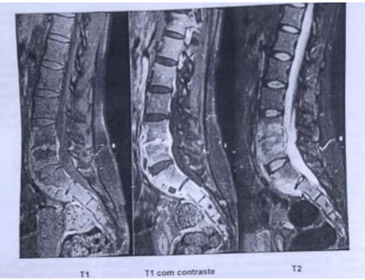
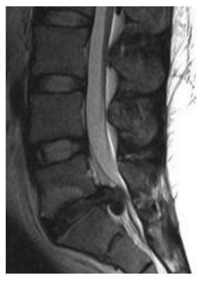

Questão 1 · Metástases Ósseas · Lombalgia · Fraturas Patológicas · 4000133793Mulher de 59 anos foi atendida na Unidade de Pronto Atendimento (UPA), apresentando dor lombar contínua, de forte intensidade, com piora progressiva desde o início do quadro há um mês e, especialmente, à noite. Faz uso de analgésicos e anti-inflamatórios por conta própria. Relata ter sido costureira, mas, no momento, não está trabalhando. Informa ter tido câncer de mama há cinco anos, mas já recebeu alta da oncologia. Também relata dor epigástrica, mesmo em uso de omeprazol 20mg. O médico realiza o exame físico e identi ca hiperalgesia aos estímulos. Ele solicita um raio X que evidencia lesões líticas. Para a abordagem da dor e manejo adequado dos sintomas, a conduta mais recomendada é:
A Informar o diagnóstico provável de câncer, manter o analgésico e fazer calor para alívio da dor.
B investigar a causa da dor e aplicar anti-inflamatório por via IM para alívio imediato dos sintomas.
C considerar a história prévia, oferecer analgésicos regulares e opioides, e suspender anti inflamatório.
D oferecer apoio e explicar as causas do sofrimento da paciente, aumentando o uso de omeprazol.
Revisar: possível letra faltando em enunciado
Questão 2 · Lombalgia · 4000133218Até 90% das pessoas terão dor lombar em algum momento da vida. É uma das cinco causas mais comuns de atendimento de urgência/emergência e é a principal causa de absenteísmo e aposentadoria por invalidez antes dos 45 anos de idade. Sendo assim, é considerada um problema de saúde pública. Sobre dor lombar, assinale a alternativa CORRETA:
A Existem indicações precisas para realização de exames de imagem para investigação de dor lombar, um exemplo são as
B Deve sempre ser avaliada por um ortopedista especialista em coluna, para excluir causas graves.
C Tratar a dor lombar crônica com anti-inflamatórios não esteroidais é uma prática médica considerada adequada, já que seus efeitos colaterais (lesão de mucosa gástrica, insuficiência renal) são facilmente manejados por um bom clínico.
D A causa mais comum de dor lombar é a hérnia de disco, com sintomas de irradiação nervosa para membros inferiores, e o tratamento padrão ouro é a laminectomia.
E Retenção urinária, febre, perda ponderal, histórico de câncer e anemia não são considerados
Questão 3 · Quadro clínico diagnóstico e sinais de alarme · Tratamento · 4000129556Paciente masculino, 55 anos, comparece à demanda espontânea com queixa de dor lombar iniciada há 1 semana durante a qual manteve repouso relativo pois já tinha passado por crises semelhantes mas que resolviam apenas com repouso e uso de relaxantes musculares. No entanto, dessa vez, resolveu buscar atendimento pois além da persistência da dor tem sentido dormência na perna direita. Nega alterações urinárias ou intestinais ou dormência perineal. Ao exame, apresenta Lasegue + a direita e diminuição da força de dorsiflexão do pé direito. Qual a conduta indicada nesse caso?
A Fisioterapia e retorno em 3 meses.
B Encaminhar para serviço de emergência.
C Antiinflamatório oral e retorno em 1 semana.
D Corticoide de depósito e retorno em 1 mês.
Questão 4 · Tratamento · Quadro Clínico e Diagnóstico · 4000127305Paciente, sexo masculino, 55 anos, portador de lombalgia crônica mecânica inespecí ca, há dois anos, com episódios pouco frequentes de piora intermitente da dor. Ontem, compareceu à UPA com dor intensa, em choque, e pontadas (EVN10 de 10) na região lombar com irradiação para ambas as pernas que apareceu após levantamento de um peso no trabalho. Nega trauma. Foi prescrito analgésico sem melhora significativa e retornou para casa. Hoje, acordou com retorno da intensidade da dor em 10, queixando-se de impossibilidade de andar e perda da continência urinária. Tem histórico de transtorno depressivo grave tratado há dois anos. Atualmente sem medicações. Foi asmático e fez utilização de corticoides por via oral, cronicamente, por cerca de 15 anos. Ao exame físico, apresenta-se imóvel no leito, intensa dor à mínima mobilização, força difícil de quanti car (pela presença de dor intensa), sensibilidade alterada em território de L4-L5 e L5-S1, reflexos patelar e aquileu abolidos bilateralmente. Toque retal sugere hipotonia es ncteriana. Lasegue clássico positivo bilateralmente. LEGENDA: EVN: escala visual numérica de dor. Qual a conduta mais apropriada para o caso?
A Solicitar, imediatamente, transferência regulada para serviço cirúrgico terciário especializado.
B Solicitar ressonância magnética de coluna lombar, analgesia e manter na observação da UPA.
C Solicitar PSA, PCR, tomografia computadorizada e encaminhar para ambulatório especializado.
D Solicitar ressonância magnética de coluna lombar e encaminhar para ambulatório especializado.
Revisar: possível letra faltando em enunciado
Questão 5 · Diagnósticos dif erenciais · 4000109646Homem de 42 anos de idade com antecedente de hipertensão arterial, apresenta dor lombar crônica há cinco anos, após levantar peso no ambiente de trabalho. No episódio inicial apresentou dor intensa e súbita associada à limitação de movimentos que levou a afastamento do trabalho por um período de 10 dias. Voltou a trabalhar, porém, manteve dor lombar contínua, de intensidade leve a moderada com irradiação para ambas as coxas de forma difusa e piora com esforços. Vários períodos de afastamento laboral desde então, sempre com manutenção das queixas. Há 6 meses refere dor moderada a intensa com irradiação para ambos os membros inferiores e grande limitação para atividades diárias sem qualquer melhora com uso de anti-inflamatórios ou analgésicos. Faz uso eventual de tramadol, porém nega melhora significativa. Nega febre ou perda de peso. O exame clínico é normal exceto por dor à exão e extensão lombar. O exame neurológico é normal. Paciente traz exame de ressonância magnética realizado há 2 meses com desidratação discal L4-L5 e L5-S1. Discretas protrusões discais nestes níveis sem conflito radicular. Qual é a principal hipótese diagnóstica?
A Lombalgia mecânica comum.
B Estenose do canal lombar.
C Espondilite anquilosante.
D Hérnia discal.
Questão 6 · Quadro clínico diagnóstico e sinais de alarme · 4000089680A dor lombar é uma queixa frequente na Atenção Primária, mas os episódios de dor costumam ser agudos e autolimitados. Os sinais de alerta que devem ser considerados na dor lombar são:
A perda de peso sem causa aparente de mais de 10% do peso corporal total
B dor com duração maior que três semanas, sem resposta ao tratamento
C trauma recente importante ou leve em pacientes com mais de 45 anos
D febre por mais de 24 horas e uso de drogas injetáveis
Questão 7 · Semiologia da coluna vertebral · Quadro Clínico e Diagnóstico · 4000075767O paciente com radiculopatia associada a compressão da raiz nervosa lombossacral L2 apresenta a distribuição da dor em qual local do corpo?
A Panturrilha medial.
B Face anterior da coxa.
C Planta do pé.
D Nádegas.
E Face posterior da coxa.
Questão 8 · Estenose do canal lombar · 4000069632Uma mulher de 68 anos de idade queixa-se de piora de dor nas costas, nádegas e nas coxas bilateralmente nos últimos 6 a 9 meses. Ela relata que a dor é pior quando ca em pé por mais de 10 a 15 minutos. A dor também está presente durante uma caminhada prolongada. Em todos os casos, ela se sente melhor quando se senta. Ela nega qualquer dor ou inchaço na panturrilha. Seu histórico médico é notável para hipertensão controlada com enalapril. Seu único outro medicamento é a vitamina D. diária. Seu exame físico é normal, com sinais vitais normais, sem inchaço nos membros inferiores e sem sopro vascular. Qual das alternativas a seguir é o diagnóstico mais provável?
A Dissecção da aorta
B Doença do disco lombar
C Estenose do canal medular lombar
D Arterite de Takayasu
E Claudicação vascular
Revisar: possível letra faltando em enunciado
Questão 9 · Tratamento · 4000065513Homem de 55 anos, com doença degenerativa da coluna vertebral, apresenta quadro recorrente de dor lombar intensa, incapacitante, com irradiação para região posterolateral da coxa e perna direita, associado a dé cits sensitivos no hálux e dorso do pé direito, e fraqueza motora envolvendo os músculos tibial anterior e extensor longo do hálux. Foi solicitado exame de imagem da coluna vertebral para estudo diagnóstico. Diante da história e apresentação clínica, qual a opção terapêutica mais apropriada para este paciente?
A Instrumentação e artrodese da coluna lombar.
B Fisioterapia, analgésicos e esteroides por via oral.
C Repouso por 4 a 8 semanas, analgésicos e relaxante muscular.
D Repouso por 4 semanas, analgésicos e injeção epidural de esteroides.
Questão 10 · Tratamento · 4000040451Qual a melhor conduta para um paciente que você faz o diagnóstico clínico de lombalgia mecânica?
A Prescrever AINES por 3 dias e repouso por 2 dias;
B Solicitar radiografia de coluna lombar e, se resultado normal, prescrever AINES por 5 dias e repouso por 3 dias;
C Orientar postura correta, atividade física regular, prescrever AINES por 5 dias e repouso por 3 dias;
D Prescrever AINES, solicitar radiografia de coluna lombar e encaminhar ao ortopedista.
Questão 11 · Quadro clínico diagnóstico e sinais de alarme · Tratamento · 4000033692Você, médico (a) de uma UBS, depara-se com o seguinte caso: paciente de 42 anos, pedreiro, vem ao seu consultório com queixa de dor lombar não irradiada há 1 dia. Relata que no dia anterior chegou em casa após uma extenuante tarde de trabalho, sentou-se no chão para jogar videogame com seu lho de 11 anos e ao tentar se levantar ""travou a coluna"". Desde então não consegue mantê-la ereta, caminha com di culdade e não encontra posição confortável para sentar ou dormir. Tem alívio parcial ao repouso e ao uso de anti-inflamatório não esteroide (AINE). Nega episódios prévios semelhantes. Ao exame físico você constata adoção de posição antálgica (leve exão de tronco), trigger points distribuídos em musculatura paravertebral de região lombar e dor lombar à manobra de Laségue. A conduta mais adequada para o caso é:
A orientar repouso absoluto, compressas mornas locais, manter AINE por tempo prolongado, associar opioide.
B solicitar radiografia de coluna lombar, manter AINE por período prolongado, associar opioide, encaminhar à fisioterapia.
C solicitar ressonância magnética de coluna lombar, orientar repouso absoluto, manter AINE por curto período de tempo, associar relaxante muscular.
D orientar o paciente a manter-se ativo, compressas mornas locais, manter AINE por curto período de tempo, associar relaxante muscular.
Questão 12 · Quadro clínico diagnóstico e sinais de alarme · Tratamento · 4000032903A dor lombar é uma das queixas mais frequentes da prática do médico generalista. Sobre este tema, assinale a alternativa correta:
A A radiografia da coluna lombar não está indicada na avaliação inicial da pessoa com suspeita de lombalgia mecânica.
B As lombalgias decorrentes de causas sistêmicas são mais frequentes que as decorrentes de causas mecânicas.
C O uso de corticosteroides injetáveis é indicado nas lombalgias em que não há sinais de compressão de raiz nervosa.
D Nas lombalgias mecânicas, o espasmo da musculatura paravertebral é pouco frequente.
Questão 13 · Quadro clínico diagnóstico e sinais de alarme · 4000031231O diagnóstico diferencial de lombalgia é amplo e muitas vezes pode ser realizado sem propedêutica armada e considerando história clínica e exame físico bem apurado. Assinale a opção onde há correspondência coerente entre o sinal de alerta em lombalgia e a causa potencial para tal achado.
A Febre e perda de peso - causas inflamatórias
B Rigidez matinal maior que 1 hora - causas traumáticas
C Dor com maior intensidade à noite - osteoartrite
D Diminuição da força muscular - espondilite ou epifisite
E Anestesia em sela - compressão da cauda equina
Questão 14 · Quadro Clínico e Diagnóstico · 4000020870Adolescente do sexo masculino, 14 anos, refere dor nas costas há 5 semanas tanto ao jogar voleibol (pratica todos os dias por 3 horas) como em repouso, às vezes piorando em repouso. Já procurou atendimento e o médico disse ser “dor do crescimento” e que as dores vão passar com o tempo. Com bases nessas informações, qual a hipótese diagnóstica?
A Espondilólise
B Doença de Sever.
C Tumor de vértebras.
D Artrite reumatoide juvenil.
Questão 15 · Diagnósticos dif erenciais · 4000120542Homem de 30 anos, trabalhador de fábrica, relatando dor lombar, sem irradiação, que melhora quando anda e piora com o repouso. Qual a principal hipótese diagnóstica?
A Dor muscular.
B Hérnia discal.
C Artrose de coluna.
D Espondiloartrite.
Questão 16 · Diagnósticos dif erenciais · 4000100426Homem de 35 anos, sem antecedentes de queda ou trauma, refere há 10 dias de dor lombar sem irradiação, que melhora quando anda e piora quando dorme. A principal hipótese diagnóstica é:
A Lombociatalgia.
B Espondiloartrite.
C Osteoartrite de coluna lombar.
D Estenose de canal medular.
Questão 17 · Osteomielite · Fraturas Patológicas · 4000078249Mulher, 27 anos, apresenta dor lombar moderada com piora nos últimos meses. Na Ressonância Magnética (RM) observa- se:

A destruição do disco de L4-L5 com provável abscesso perivertebral
B focos de impregnação de contraste nos corpos de L1 a L5, devendo corresponder a lesões metastáticas
C lesões nodulares hiperintensas em T1 e em T2 nos corpos de L4 e L5, sugestivas de hemangiomas
D redução do espaço discal com esclerosa do platô discal de L4-L5, por provável artrose degenerativa
Questão 18 · Tratamento · 4000073324Na prevenção de novos episódios de lombalgia se mostraram eficientes:
A Exercícios.
B Uso de suporte lombar.
C Manejo de estresse.
D Programas de redução de levantamentos de peso.
E Educação sobre coluna e ergonomia;
Questão 19 · Semiologia da coluna vertebral · Quadro Clínico e Diagnóstico · 4000072162Um atleta amador de tênis, 50 anos de idade, procurou atendimento médico com queixa de dor cervical. Ao examinar o paciente, o residente de ortopedia encontrou parestesia localizada nas porções laterais anterior e posterior do braço esquerdo, abaixo do músculo Deltóide e acima do cotovelo. Qual a raiz nervosa provavelmente acometida neste caso?
A C3
B C4
C C5
D T1
E T2
Questão 20 · Quadro clínico diagnóstico e sinais de alarme · Tratamento · 4000071044Dona de casa procura uma unidade básica de saúde por sentir dor lombar, negando febre e outros sintomas. Ao exame físico, a paciente apresenta dor na movimentação e compressão da musculatura dorsal. Nesse caso, a conduta mais adequada consiste no(a):
A Demora permitida ou observação assistida, pois geralmente as dores lombares não complicadas evoluem para remissão espontânea.
B Encaminhamento ao ortopedista para possível realização de bloqueio anestésico ou infiltração de corticoide.
C Indicação de fisioterapia e/ou eletroacupuntura para prevenir o desenvolvimento de uma lombalgia crônica.
D Realização de uma ressonância nuclear magnética, pelo risco de hérnia de disco ou lesão ligamentar.
Questão 21 · Semiologia da coluna vertebral · Quadro Clínico e Diagnóstico · 4000049280No caso de hérnia de disco lombar, a alternativa que correlaciona corretamente a raiz lesada com a alteração clínica produzida é:
A L4 – alteração do reflexo aquileu.
B L4 – alteração motora do músculo gastrocnêmio.
C L4 – alteração da sensibilidade na face lateral do pé.
D L5 – alteração do reflexo patelar.
E L5 – alteração motora do músculo glúteo médio.
Questão 22 · Semiologia do Quadril · Diagnósticos dif erenciais · 4000042962Homem, 72 anos, obesidade grau 2, com queixa de dor lombar há 3 anos, progressiva, sem história de trauma. Dor com piora após movimentação e certo alívio ao repouso. Piora do quadro nos últimos 2 meses, com persistência da dor ao repouso e sem melhora com uso diário de analgésicos e anti-inflamatórios não esteroidais. Ao exame: dor a palpação lombar baixa, mobilidade lombo-sacra preservada, encurtamento dos músculos isquiotibiais, limitação importante da rotação interna e abdução do quadril esquerdo, manobra de Thomas (+), manobra de Yeoman (-), manobra de Laségue (-). A suspeita diagnóstica e exame adequado são:
A hérnia de disco, ressonância nuclear magnética.
B hérnia de disco, radiografia de coluna lombar.
C osteoartrose de quadril, ressonância nuclear magnética.
D osteoartrose de quadril, radiografia da bacia.
Questão 23 · Doença degenerativa discal e hérnia discal · 4000130133Homem, 68a, refere dorsalgia há 20 anos com irradiação para face anterior das pernas e melhora com o uso de anti- inflamatórios não esteroidais. Há 10 dias apresentou piora da dor lombar e há 24 horas apresenta incontinência fecal e urinária. Exame neurológico: força grau II em membros inferiores, ausência de hiperre exia e de sensibilidade abaixo da cicatriz umbilical. O exame a ser solicitado para o diagnóstico etiológico é:
A Eletroneuromiografia.
B Cintilografia óssea.
C Ressonância nuclear magnética.
D Pesquisa de células neoplásicas no liquor.
Questão 24 · Quadro clínico diagnóstico e sinais de alarme · Tratamento · 4000105384Um senhor de 45 anos procura sua unidade de Saúde da Família queixando-se de dor na região lombar esquerda e parte posterior da coxa ipsolateral, com piora a caminhar. O quadro iniciou há 1 semana, um dia depois de ter feito esforço físico para pintar sua garagem. O paciente nega trauma local, emagrecimento ou febre. O exame físico não evidencia dé cit sensitivo ou motor. Assinale a alternativa que melhor indica a conduta para esse paciente:
A Solicitar Eletromioneurografia e indicar repouso enquanto durar a dor
B Orientar o paciente sobre o quadro e prescrever anti-inflamatório não hormonal e relaxante muscular
C Solicitar Raios X de coluna lombar e encaminhar para especialista
D Solicitar Tomografia de coluna lombar e prescrever codeína por via oral
Questão 25 · Quadro clínico diagnóstico e sinais de alarme · 4000105048Homem, 78 anos, com dor lombar em pressão, diária e contínua nos últimos quatro meses. Quadro se iniciou após queda da própria altura e procura atendimento médico por persistência dos sintomas neste período. Comorbidades: diabetes e câncer de próstata. O exame físico é normal. Os sinais de alarme que indicam necessidade de exame de imagem lombar neste paciente:
A Sexo masculino, idade > 50 anos e câncer.
B Sexo masculino, dor lombar > 1 mês, trauma e diabetes.
C Idade > 50 anos, dor lombar > 1 mês, trauma e câncer.
D Idade > 50 anos, dor lombar > 1 mês, trauma, câncer e diabetes.
E Idade > 50 anos, sexo masculino, trauma, diabetes e câncer
Questão 26 · Quadro clínico diagnóstico e sinais de alarme · Tratamento · 4000076540Arrumadeira de hotel com 35 anos, obesa, procura atendimento com história de uma semana de dor lombar incapacitante. Ao ser examinada, não se detectaram maiores problemas, exceto seu peso. O próximo passo será:
A Seis semanas de repouso no leito.
B Ressonância de coluna lombo-sacra.
C RX simples de coluna lombo-sacra.
D Opioide
E Anti-inflamatório não hormonal e restrição de suas atividades.
Questão 27 · Tratamento · Diagnósticos dif erenciais · 4000046999Paciente de 34 anos com queixa de dor lombar, na região glútea e nas coxas há 15 dias. Trabalhador braçal em frigorí co. Histórico clínico sem outras anormalidades. Apresenta sensibilidade, reflexos, mobilidade, tro smo e força muscular dos membros inferiores normais. A manobra de Lasègue a direita, elevação do membro inferior a 60 graus na posição supina, refere dor na região lombar. No teste de carga axial, a compressão vertical sobre a cabeça do paciente desencadeia dor lombar. Assinale a alternativa CORRETA em relação ao manejo deste caso:
A Solicitar ressonância magnética da coluna lombar para investigar os sinais de compressão radicular identificados no exame físico.
B Solicitar radiografia de coluna lombar para afastar fratura e/ou artrose.
C Solicitar radiografia de coluna lombar e VHS para descartar infecção ou neoplasia.
D Solicitar exames complementares não é necessário pela suspeita de lombalgia inespecífica aguda.
E Recomendar repouso por 30 dias e fisioterapia pois tais medidas aceleram a recuperação.
Revisar: possível letra faltando em enunciado
Questão 28 · Quadro clínico diagnóstico e sinais de alarme · 4000046503D. Sophia tem 55 anos, é mãe de 2 lhos adultos e casados, tem 5 netos e é frentista. Iniciou com dor lombar localizada há 5 meses. Veio à unidade de saúde e foi tratada com Ibuprofeno em dose adequada e sioterapia. Retorna hoje com persistência e piora da dor que a acorda de madrugada. Sente também parestesias em região perineal. Sobre o caso, assinale a alternativa CORRETA quanto à conduta na Atenção Primária à Saúde.
A O quadro é de lombalgia mecânica e deve ser prescrito analgésico opioide por via oral, além de terapias complementares como acupuntura.
B O quadro decorre de hérnia discal e deve ser prescrito anti-inflamatório hormonal intramuscular associado à fisioterapia.
C O quadro é de lombalgia mecânica, o tratamento precisa de otimização e pode ser radiografada a coluna, sem a necessidade de outras avaliações.
D Deve-se tranquilizar D. Sophia quanto a benignidade do quadro, embora de difícil tratamento, e otimizar o tratamento conservador na unidade de saúde.
E Deve-se solicitar a radiografia de coluna e referenciar a paciente para investigação complementar.
Questão 29 · Diagnósticos dif erenciais · 4000042101Assinale a assertiva CORRETA:
A Na lombalgia mecânica a dor geralmente se irradia para as coxas e apresenta evolução insidiosa.
B A dor da hérnia discal geralmente inicia-se nas primeiras horas do dia, com quadro agudo, intenso, com irradiação da dor para um dos membros inferiores.
C No osteoma osteoide a dor ocorre durante o dia, à movimentação, devido à liberação de prostaglandinas pelas células tumorais nesse horário.
D No estreitamento do canal raquidiano a dor ao caminhar piora pricipalmete ladeira acima e melhora ladeira abaixo, diferenciando da claudicação vascular.
E A dor de origem psicossomática apresenta-se com sensibilidade dolorosa profunda, sem alternância de localização.
Questão 30 · Lombalgia · 4000041057A.V.S., sexo masculino, 30 anos de idade, solteiro, comparece pela primeira vez à Unidade Básica de Saúde (UBS) de seu bairro por conta de dor nas costas há 2 dias. Ao ser atendido pelo médico, inicia a conversa dizendo que gostaria que lhe fosse pedido um raio X da coluna ou uma ressonância. O médico pediu detalhes do ocorrido e cou sabendo que A.V.S trabalha como carregador em uma embarcação e que sentiu “a coluna travar”, enquanto tentava organizar sacos de cimento no chão. Já havia tomado, por conta própria, diclofenaco 50 mg, 2 comprimidos ao dia, sem melhora do quadro. Estava preocupado, pois seu tio de 60 anos tinha morrido recentemente de câncer cuja investigação se iniciou por quadro de dor nas costas. Sobre a queixa trazida pelo paciente, do caso clínico acima, é correto afirmar que:
A na maioria dos quadros de lombalgia é possível identificar a causa específica.
B é prudente a solicitação de exames de imagem dado ao risco para neoplasia ou doença grave
C se houver piora da dor no período noturno, neoplasia precisa ser considerada.
D o uso de diclofenaco não faz parte do arsenal terapêutico da dor lombar.
E o desejo de ser aposentado precocemente não é diagnóstico diferencial.
Questão 31 · Semiologia da coluna vertebral · Quadro Clínico e Diagnóstico · 4000035423A hérnia de disco lombar é uma doença degenerativa que ocorre ao longo da vida, levando a dor e a incapacidade em grande parte da população mundial. Sendo uma doença de alta prevalência e alta incidência, porém de tratamento conservador em 95% dos casos. O tratamento cirúrgico deve ser específico para o disco causador da dor e isso é fácil, devido a correlação anatômica. Portanto se um paciente com uma hérnia de disco na localizado entre a vértebras L3 (terceira vértebra lombar) e L4 (quarta vértebra lombar) apresentará as seguintes alterações:
A Alteração da raiz se L3, com dores nas regiões da coluna lombar e face medial de coxa. Reflexo patelar diminuído ou ausente, atrofia dos adutores do quadril.
B Dores nas regiões da coluna lombar, quadril e face anterior de perna. Fraqueza na extensão de joelho, atrofia do quadríceps e reflexo patelar ausente ou diminuído.
C Dores nas regiões sacroilíaca, quadril, póstero-lateral da coxa e anterolateral da perna, fraqueza na dorsiflexão do hálux e alteração da sensibilidade lateral da perna.
D Dores nas regiões da sacroilíaca, quadril e posterior de coxa. Sensibilidade diminuída na região posterior da perna e lateral do pé e reflexo Aquileu diminuído ou ausente.
Questão 32 · Quadro clínico diagnóstico e sinais de alarme · Tratamento · 4000015988Paciente do sexo feminino, 45 anos, trabalha como empregada doméstica, queixa-se de dor lombar crônica, de caráter mecânico, sem sinais de alarme, com exacerbação há 02 semanas. Relaciona a dor ao trabalho. Ao exame físico, apresenta sobrepeso, dor difusa à palpação da região lombar paravertebral sem irradiação. Ausência de pontos- gatilhos. Restante do exame físico sem alterações. Além da perda de peso, o que deve constar no plano terapêutico da paciente?
A Prescrição de analgésico opioides.
B Realização de exercício físico aeróbico e alongamento.
C Prescrição de antidepressivos por pelo menos 6 meses.
D Afastamento das atividades laborais até melhora do quadro álgico.
Questão 33 · Quadro clínico diagnóstico e sinais de alarme · Tratamento · 4000014109Homem, 58 anos, obeso, com queixa lombociatalgia de intensidade leve a moderada há 4 semanas Exame físico sem sinais de dé cit neurológico e com força muscular grau V nos membros inferiores. Levando em consideração a principal hipótese diagnóstica qual é a conduta a ser tomada?
A Perda de peso, fisioterapia, analgésicos e relaxantes musculares com reavaliação em 4 semanas.
B Solicitar ressonância magnética.
C Indicar cirurgia de fusão com aloenxerto ósseo e placa de titânio e parafusos.
D Indicar cirurgia de laminotomia.
E Indicar cirurgia de hemilaminectomia.
Questão 34 · Quadro clínico diagnóstico e sinais de alarme · Diagnósticos dif erenciais · 4000002061São características da lombalgia de ritmo inflamatório:
A Dor lombar aguda que piora com a atividade física e melhora após repouso prolongado.
B Dor lombar crônica que piora após o repouso prolongado e melhora com a atividade física.
C Dor lombar crônica que piora com a atividade física e melhora após o repouso, especialmente pela manhã.
D Dor lombar crônica que não varia com repouso ou atividade física.
Questão 35 · Quadro clínico diagnóstico e sinais de alarme · Tratamento · 4000119509Mulher de 35 anos de idade, de antecedentes apenas síndrome metabólica, em tratamento não farmacológico, tem dor lombar vespertina sem outros sintomas associados. O exame físico é normal. Qual é a conduta mais apropriada neste momento?
A Dosar hemograma, PC e VHs e RX de coluna lombar.
B Realizar RM de coluna lombar já que a dor é vespertina.
C Prescrever tramadol + ciclobenzaprina e reavaliar.
D Prescrever AINH por 3-4 semanas e reavaliar.
Questão 36 · Quadro clínico diagnóstico e sinais de alarme · Tratamento · 4000105929Um homem de 42 anos de idade relata dor lombar três dias após fazer esforço, mudando móveis em sua residência. Não apresenta fraqueza nos membros inferiores ou alterações de sensibilidade. Não apresenta outros sintomas. Ao exame físico nota-se limitação na exão e extensão da coluna lombar. Não há dor irradiada à elevação da perna, ou outras alterações neurológicas. Além de analgesia, qual é a conduta apropriada nesse caso?
A Repouso no leito
B Ressonância magnética da coluna lombar
C Atividade física conforme tolerar
D Radiografia da coluna lombar
E Cintilografia da coluna toraco-lombar
Questão 37 · Quadro clínico diagnóstico e sinais de alarme · Tratamento · 4000105186Mulher de 62 anos de idade vem ao Pronto-Socorro com dor em região lombar baixa há 2 meses. A dor é em pontada, irradia para região lateral da coxa esquerda, piora ao movimentar-se e melhora no período noturno quando descansa. Nega trauma, febre e emagrecimento. Esteve há 3 semanas no Pronto-socorro devido ao quadro, ocasião em que foi receitado Dipirona, sem melhora. Apresenta hipertensão arterial, diabetes mellitus tipo II e relata câncer de mama em uso de tamoxifeno. Exame neurológico sem parestesias, todos os grupos musculares com força grau 5, reflexos normais. Sem outras alterações ao exame clínico. Quais são os sinais de alarme da lombalgia nesta paciente e qual é a conduta?
A Idade > 60 anos, dor irradiada para coxa, uso de tamoxifeno - Solicitar radiografia da coluna lombar
B Idade > 50 anos, história de câncer, retorno ao Pronto-Socorro há menos de 1 mês Solicitar radiografia da coluna lombar
C Dor lombar há mais de 1 mês, retorno ao Pronto-Socorro há menos de 1 mês, piora ao movimentar-se - Solicitar ressonância magnética
D Sexo feminino, história de câncer, dor irradiada para coxa - Solicitar ressonância magnética
Questão 38 · Tratamento · 4000105073Maria Antônia, 46 anos, auxiliar administrativo, casada e mãe de três lhos, procura a unidade de saúde em consulta médica agendada, referindo dor nas costas há um ano, iniciada após ter dado "mau jeito" ao levantar um balde com roupa. Não está em uso de nenhuma medicação atualmente e atribui, em escala verbal numérica, nota 6 para a dor no momento da consulta, localizando-a na região lombar baixa. Refere períodos de exacerbação quando faz esforço físico em casa ou no trabalho. Procurou o pronto-socorro nesse período, onde lhe foi administrada injeção, cujo nome não sabe referir, e prescrito diclofenato sódico para tomar em casa durante 7 dias, com melhora parcial e temporária do sintoma. Precisou faltar ao trabalho em virtude da dor por duas vezes no último mês e sente que a relação com o seu chefe está comprometida em função disso, pois acha que, na empresa, não acreditam na dor que vem sentindo. Está bastante preocupada, pois tem uma vizinha que teve quadro semelhante e não conseguiu mais trabalhar, tendo cado praticamente acamada. Está ansiosa e pergunta várias vezes durante a consulta se deve se afastar do trabalho para realizar tratamento e também para saber se podem fazer seus afazeres domésticos. Apresenta discreta lordose ao exame físico, sem, no entanto, nenhuma alteração no exame neurológico. Com relação à prescrição medicamentosa, a melhor conduta nessa consulta seria:
A Prescrever paracetamol e aguardar resultado do exame de imagem para realizar a conduta medicamentosa mais adequada.
B Prescrever paracetamol e amitriptilina em uso contínuo e diclofenaco sódico por cinco dias, com retorno para avaliação em duas semanas.
C Prescrever paracetamol e metadona em uso contínuo, desconsiderando a introdução de amitriptilina nesse momento, já que a ação desse último medicamento levaria algumas semanas para se iniciar, e Maria Antônia encontra-se atualmente com dor.
D Prescrever dipirona e diclofenaco sódico em uso contínuo, desconsiderando a introdução de opióide, já que, diante de quadro crônico, o risco de adição com o medicamento é muito alto.
E Nenhuma das anteriores.
Revisar: possível letra faltando em enunciado
Questão 39 · Tratamento · 4000105058Maria Antônia, 46 anos, auxiliar administrativo, casada e mãe de três lhos, procura a unidade de saúde em consulta médica agendada, referindo dor nas costas há um ano, iniciada após ter dado "mau jeito" ao levantar um balde com roupa. Não está em uso de nenhuma medicação atualmente e atribui, em escala verbal numérica, nota 6 para a dor no momento da consulta, localizando-a na região lombar baixa. Refere períodos de exacerbação quando faz esforço físico em casa ou no trabalho. Procurou o pronto-socorro nesse período, onde lhe foi administrada injeção, cujo nome não sabe referir, e prescrito diclofenato sódico para tomar em casa durante 7 dias, com melhora parcial e temporária do sintoma. Precisou faltar ao trabalho em virtude da dor por duas vezes no último mês e sente que a relação com o seu chefe está comprometida em função disso, pois acha que, na empresa, não acreditam na dor que vem sentindo. Está bastante preocupada, pois tem uma vizinha que teve quadro semelhante e não conseguiu mais trabalhar, tendo cado praticamente acamada. Está ansiosa e pergunta várias vezes durante a consulta se deve se afastar do trabalho para realizar tratamento e também para saber se podem fazer seus afazeres domésticos. Apresenta discreta lordose ao exame físico, sem, no entanto, nenhuma alteração no exame neurológico. A melhor postura em relação à orientação sobre o trabalho e a realização de atividades físicas de rotina nessa consulta inicial seria:
A Solicitar radiografia da coluna lombossacra e aguardar o resultado para orientação sobre afastamento do trabalho.
B Afastar Maria Antônia do trabalho e orientá-la a não realizar qualquer tipo de esforço em casa para evitar exacerbação do quadro.
C Orientá-la sobre o caráter benigno da lombalgia inespecífica e estimular a manutenção de atividades leves, restringindo afastamento do trabalho apenas períodos curtos, se for necessário.
D Orientá-la a não fazer qualquer tipo de restrição à atividade física e informar que não irá atestar afastamento laboral para esse tipo de quadro, de forma a evitar ciclo vicioso de ganho secundário com a queixa.
E Nenhuma das anteriores.
Revisar: possível letra faltando em enunciado
Questão 40 · Tratamento · 4000105045Maria, 46 anos, procura a Unidade de Saúde com queixa de dor nas costas. Há 7 dias tentou levantar um balde com roupas e passou a sofrer dessa dor. Trabalha como auxiliar administrativo e deixou de ir ao trabalho por 2 dias. Queixa-se de irritabilidade e insônia nesse mesmo período. Ainda não tomou medidas para aliviar a dor. Maria graduou a dor como moderada, a nal, já sentiu piores. Após avaliação, o médico decide prescrever analgesia medicamentosa além de medidas locais. Considerando a graduação da dor, qual seria a medicação (ou combinação) mais adequada?
A Morfina + clonazepam
B Paracetamol + diclofenato
C Dipirona + passiflora
D Paracetamol
E Nenhuma das anteriores.
Questão 42 · Quadro clínico diagnóstico e sinais de alarme · 4000069408Os principais dados apontam que 70% das pessoas com mais de 40 anos apresentam algum problema de coluna, e esse número sobe para 80% a 90% em pessoas com mais de 50 anos. Considerando os sinais de alerta (ou bandeira vermelha) para a dor lombar, segundo orientação do Ministério da Saúde, marque a opção correta:
A A dor lombar pode ser muito influenciada por fatores psicológicos, tais como estresse e depressão, bem como outros fatores não orgânicos, podendo acometer qualquer estrutura da coluna. Entretando, as estruturas mais acometidas são os ossos.
B Ao se avaliar as origens da dor lombar na população que procura as Unidades Básicas de Saúde é possível constatar que as causas mais frequentes são a fratura compressiva osteoporótica e a estenose medular.
C No atendimento de urgências, a realização do exame físico deve ser priorizado em detrimento da anamnese com o objetivo de determinar a natureza da lombalgia. Caso a lombalgia seja infecciosa, traumática e neoplásica deve se identificá-las com "bandeiras vermelhas"
D Alguns sinais de alerta ou bandeira vermelha são importantes para avaliar a lombalgia, tais como a idade (entre 20 e 50 anos), relato de dor que piora à noite, história de neoplasia e emagrecimento, febre, relatos de grandes traumas, realização de tratamento para osteoporose, dor refratária ao tratamento, fraqueza muscular ou distúrbios urinários ou gastrintestinais.
Questão 43 · Apresentação clínica · Diagnósticos dif erenciais · 4000046760Homem, enfermo, 79 anos, queixa-se de dor lombar aguda com início há quase 3 semanas. Refere ainda, insônia e perda de peso de 5 kg nos últimos 8 meses. Nega melhora da dor após uso de anti-inflamatórios não hormonais, derivados morfínicos e repouso no leito. A hipótese diagnóstica mais provável é:
A Comprometimento metastático da coluna lombar.
B Estenose do canal medular.
C Fratura vertebral por osteoporose senil.
D Lombalgia mecânica.
Questão 44 · Semiologia da coluna vertebral · Quadro Clínico e Diagnóstico · 4000027189Chris Weidman, lutador de artes marciais mistas (MMA), tornou-se campeão mundial de peso médio ao derrotar Anderson Silva por nocaute técnico, em 2013. Perdeu o cinturão ao ser derrotado por Luke Rockhold e, na véspera de sua revanche, cou impedido de lutar devido a uma lesão no pescoço, que posteriormente fora diagnosticada como hérnia de disco cervical já extrusa e comprimindo a raiz nervosa adjacente. Na situação da hérnia de disco cervical que comprime a raiz de C6, pode ser encontrado no exame físico do paciente:
A parestesia na face medial do antebraço.
B hipoestesia do dedo mínimo.
C fraqueza do bíceps.
D diminuição do reflexo do tríceps.
Questão 45 · Quadro clínico diagnóstico e sinais de alarme · 4000027151Lombalgia aguda é uma das maiores causas de procura por assistência médica em pronto-socorro. Além de uma completa anamnese, devemos solicitar como exame complementar a radiografia de coluna lombar em caso de
A paciente com mais de 40 anos.
B parestesia de membros superiores associada.
C perda de peso maior que 10 kg em 2 meses.
D mais de uma visita ao médico em menos de 30 dias pelo mesmo motivo.
Questão 46 · Semiologia da coluna vertebral · Quadro Clínico e Diagnóstico · 4000022844Os achados de exame físico na hérnia de disco cervical que comprime a raiz de C7 apresentam diminuição:
A Do reflexo do bíceps.
B De força do músculo deltoide.
C De força do músculo bíceps.
D Do reflexo do tríceps.
Questão 47 · Quadro clínico diagnóstico e sinais de alarme · 4000091571Considere as condições a seguir. I - História de câncer. II - Febre ou estado de imunossupressão. III - Disfunção esfincteriana. Quais delas constituem situações que con guram sinais de alerta para uma possível doença subjacente grave em uma paciente com lombalgia aguda?
A Apenas I
B Apenas II
C Apenas III
D Apenas II e III
E I, II e III
Questão 48 · Semiologia da coluna vertebral · Quadro Clínico e Diagnóstico · 4000079957Homem de 45 anos, obeso, apresenta lombalgia de início recente, de forte intensidade, com irradiação para membro inferior esquerdo (face lateral da coxa e perna) com parestesia e di culdade de deambular. Ao exame clínico, apresenta postura antálgica, marcha prejudicada e di culdade de realizar os movimentos da coluna, sinal de Lasègue positivo a 30° à esquerda e dificuldade em realizar a dorso-flexão do pé esquerdo. A hipótese diagnóstica para esse paciente é:
A Radiculopatia lombar compressiva, provavelmente de S1.
B Espondilite anquilosante, com acometimento radicular típico da doença.
C Radiculopatia lombar compressiva, provavelmente de L5.
D Osteoartrite na coluna vertebral e joelhos, principalmente do MIE.
Questão 50 · Semiologia da coluna vertebral · Quadro Clínico e Diagnóstico · 4000057081O achado semiótico de fraqueza do extensor longo do hálux sugere qual radiculopatia?
A C6.
B L4.
C L5.
D S1.
E L3.
Questão 51 · Lombalgia · 4000045223A dor lombar é uma das queixas mais comuns da prática clínica do médico de família e comunidade. Sobre esta patologia, é CORRETO afirmar que:
A a osteoartrose de coluna lombar é considerada a causa mais comum de lombalgia aguda.
B os exames de imagem em geral são necessários em pacientes com lombalgia de evolução inferior a seis semanas.
C na lombalgia, há pouca correlação entre os achados clínicos com os exames complementares.
D idade superior a 35 é um sinal de alerta em pacientes com dor lombar.
E a tomografia computadorizada é o melhor exame para demonstrar a compressão radicular, em pacientes com hérnia discal.
Questão 52 · Doença degenerativa discal e hérnia discal · 4000051718A hérnia de disco lombar:
A Predomina entre L1 e L2.
B Deve ser sempre tratada clinicamente, na fase inicial. O tratamento cirúrgico é contraindicado, mesmo que haja déficit neurológico não responsivo ao tratamento clínico inicial.
C Evolui, geralmente, com dor lombar que pode se irradiar para parte posterior da coxa e perna, piora ao caminhar e às manobras de Valsalva. Melhora ao deitar.
D Decorre da herniação do ânulo (anel) fibroso externo ou do núcleo pulposo numa proporção aproximada de meio a meio.
E É melhor avaliada pela TC multislice do que pela ressonância.
Questão 53 · Estenose do canal lombar · 4000027688Estenose do canal lombar é um estreitamento do canal espinhal e/ou dos forames intervertebrais. Nesta condição, a relação continente/conteúdo torna-se pequena e, consequentemente, os elementos intrarraquianos acham-se apertados produzindo sintomas de irritação ou dé cits medulares. A radiculopatia é causada pela estenose do recesso lateral ou do forame, enquanto que a claudicação neurogênica é o resultado do estreitamento do canal vertebral. A estenose do canal lombar ocorre com maior frequência no nível:
A L4-L5
B L3-L4
C L5-S1
D L2-L3
Questão 54 · Estenose do canal lombar · 4000027686Estenose do canal lombar é um estreitamento do canal espinhal e/ou dos forames intervertebrais. Nesta condição, a relação continente/conteúdo torna-se pequena e, consequentemente, os elementos intrarraquianos acham-se apertados produzindo sintomas de irritação ou dé cits medulares. A radiculopatia é causada pela estenose do recesso lateral ou do forame, enquanto que a claudicação neurogênica é o resultado do estreitamento do canal vertebral. A síndrome do recesso lateral é provocada, na maioria dos casos, devido a:
A Espondilolistese.
B Protusão discal posterolateral.
C Hipertrofia facetária.
D Hipertrofia do ligamento amarelo.
Questão 55 · Doença degenerativa discal e hérnia discal · Lombalgia · 4000103398Em relação à dor lombar, é CORRETO afirmar que:
A Toda lombalgia com mais de duas semanas de duração em paciente com mais de 35 anos deve ser investigada com exame de imagem.
B A manobra de Lasègue e a manobra de elevação da perna esticada são comuns tanto à síndrome de distensão lombossacral, como à hérnia de disco com compressão radicular.
C A causa mais comum de dor lombar é a hérnia de disco.
D Os níveis mais frequentemente acometidos na hérnia de disco são L4-L5 e L5-S1.
E O reflexo patelar está diminuído ou ausente se a hérnia de disco for ao nível de L4-L5.
Questão 56 · Semiologia da coluna vertebral · Quadro Clínico e Diagnóstico · 4000076805Homem, 39 anos, previamente hígido, apresentou, após esforço intenso, quadro de lombociatalgia com irradiação para a região posterior do membro inferior direito e parestesias em região plantar. Exame físico: limitação da mobilidade de tronco (principalmente flexão), arreflexia do reflexo aquileu direito, com exame da sensibilidade normal. O nível mais provável da herniação discal é entre:
A L2-L3;
B L4-L5;
C L3-L4;
D L5-S1;
Questão 57 · Semiologia da coluna vertebral · Quadro Clínico e Diagnóstico · 4000064917Paciente com dor na nádega e face lateral da perna, dé cit de força para estender o hálux e reflexos de aquileu e patelar presentes. Qual raiz nervosa pode estar acometida?
A L4.
B S1.
C L5.
D S2-S3.
E L3-L4.
Questão 58 · Lombalgia · 4000064089Lombalgia aguda é definida como dor que dura menos de 3 meses. Analise as a rmativas a seguir, em relação a esse quadro clínico, e assinale a alternativa CORRETA: I - A maioria dos pacientes apresenta dor agravada pelo movimento e que alivia com repouso; II - Os exames de imagem raramente são indicados no primeiro mês de sintomas, a menos que haja suspeita de fratura vertebral; III - O repouso prolongado é a forma mais adequada de tratamento da lombalgia aguda.
A Apenas a afirmativa II está correta.
B Apenas a afirmativa III está correta.
C Apenas as afirmativas I e II estão corretas.
D Apenas as afirmativas II e III estão corretas.
E Todas as afirmativas estão corretas.
Questão 59 · Quadro clínico diagnóstico e sinais de alarme · 4000054150Assinale a alternativa em que a característica apresentada NÃO se con figura como um sinal de alerta em pacientes com dor lombar.
A perda de peso inexplicada
B déficit neurológico progressivo
C febre persistente
D Manobra de Laségue positiva ao exame físico
E idade maior de 50 anos
Questão 60 · Quadro clínico diagnóstico e sinais de alarme · Tratamento · 4000047283Homem de 30 anos, previamente hígido, refere dor em região lombar de início agudo após movimentar um sofá há 3 dias. Nega febre, emagrecimento ou qualquer outra queixa, e o exame neurológico é normal. A conduta imediata é:
A Solicitar que o paciente se mantenha ativo conforme tolerância, evitando períodos prolongados em repouso na cama e prescrever analgesia farmacológica.
B Repouso no leito por tempo prolongado e analgesia farmacológica.
C Ressonância nuclear magnética com urgência para diagnóstico de possível hérnia discal, repouso absoluto no leito e analgesia farmacológica.
D Anti-inflamatórios não hormonais e raio X de coluna lombar, bem como exames de atividade inflamatória para afastar espondiloartrite.
E Usar o corticosteroide, pois as evidências mostram que é superior ao placebo e, portanto, deve ser a droga de escolha nessa situação.
Questão 61 · Quadro clínico diagnóstico e sinais de alarme · Tratamento · 4000040268Paciente, 65 anos, masculino, com quadro de lombalgia há 2 meses, com piora à movimentação. Refere que há 45 dias iniciou paraparesia e há 2 dias está com incapacidade de movimentação de membros inferiores. Você está de plantão no pronto- socorro e faz o primeiro atendimento do paciente. Escolha a conduta CORRETA:
A Trata-se de lombalgia crônica com sinais de gravidade. Deve-se internar o paciente e solicitar o TC de coluna lombar e torácica para avaliação de compressão medular.
B Deve-se solicitar TC de coluna lombar e, se normal, iniciar tratamento domiciliar com analgesia.
C Trata-se de lombociatalgia e deve-se realizar tratamento com AINE e fisioterapia.
D Deve-se considerar a hipótese diagnóstica de espondilite anquilosante, visto tratar-se de homem com lombalgia crônica.
E Não é necessário realização de exames complementares, visto tratar-se de lombalgia aguda cuja principal etiologia é de origem mecânica.
Questão 62 · Quadro Clínico e Diagnóstico · 4000011796Homem de 65 anos, diabético tipo I, apresenta história de piora da lombalgia que vem tendo há 06 meses. A dor se inicia ao deambular, com irradiação para ambas as pernas e nádegas, exacerbada também durante a ortostase prolongada. Relata que a dor é aliviada quando sentado ou inclinando a coluna para frente. Sinal de Lasègue negativo. Baseando-se nesse conjunto de dados, o diagnóstico mais provável e o exame subsidiário recomendado para investigação diagnóstica são:
A Espondiloartrite; HLA B27.
B Hérnia discal; tomografia axial computadorizada.
C Fratura patológica dos corpos vertebrais; densitometria óssea.
D Estenose do canal vertebral lombar; ressonância magnética.
Questão 63 · Lombalgia · 4000001257A lombalgia é responsável por uma grande parte das faltas ao trabalho e suas repercussões econômicas. Alguns estudos de demanda estimam que esteja entre os 5 a 10 diagnósticos mais frequentes. Sobre a lombalgia é CORRETO afirmar:
A A radiografia é o exame complementar de escolha na abordagem inicial, devido à alta correlação entre alterações anatômicas e a causa das dores.
B Manobra de Lasègue é positiva quando o paciente referir dor irradiada quando a perna é elevada até 30°.
C O repouso e afastamento prolongado do trabalho está como uma das medidas terapêuticas mais eficazes no arsenal das não medicamentosas.
D Explicar o tempo esperado para alívio da dor, reforçar que tem grandes chances de remissão ou melhora significativa ajudam na recuperação.
E Podem ser considerados sinais de cronicidade o uso de medicamentos por mais de 4 semanas.
Questão 64 · Estenose do canal lombar · 4000105679Assinale a alternativa mais adequada em relação à Estenose Espinal Lombar (EEL):
A A maioria dos pacientes com EEL tem menos de 20 anos, com dores nas costas e pernas, muitas vezes associada com dormência e parestesias.
B A maioria dos pacientes com EEL tem menos de 35 anos, com dores nas costas e pernas, muitas vezes associada com dormência e parestesias.
C A maioria dos pacientes com EEL tem menos de 55 anos, com dores nas costas e pernas, muitas vezes associada com dormência e parestesias.
D A maioria dos pacientes com EEL tem mais de 60 anos, com dores nas costas irradiando para as nádegas e coxas. A dor agrava com a deambulação, piora com a extensão lombar e melhora com a flexão lombar. Os pulsos arteriais estão preservados nas extremidades, excluindo claudicação intermitente.
E A maioria dos pacientes com EEL tem menos de 55 anos, com dores nas costas e pernas, muitas vezes associada com dormência e parestesias. A dor agrava com a deambulação e os pulsos arteriais no pé estão diminuídos.
Questão 65 · Semiologia da coluna vertebral · Doença degenerativa discal e hérnia discal · 4000087546É correto afirmar que:
A A face lateral da perna corresponde ao dermátomo sensitivo de S1;
B O reflexo do tendão calcâneo corresponde à raiz L5;
C A ocorrência de dor no teste de elevação do membro inferior (sinal de Lasègue) contralateral à ciatalgia não tem importância diagnóstica nas radiculopatias;
D A escoliose lombar antálgica caracteriza hérnia discal lateral à raiz;
E A fraqueza do quadríceps pode relacionar-se à radiculopatia L3/L4.
Questão 66 · Avaliação dos Exames de Imagem · Quadro Clínico e Diagnóstico · 4000040280Em face da ressonância magnética abaixo reproduzida, esperar-se-iam os seguintes achados ao exame clínico de paciente com lombociatalgia aguda:

A Reflexo aquileu diminuído ou abolido, marcha na ponta dos pés dificultada.
B Reflexo aquileu diminuído ou abolido, marcha sobre os calcanhares dificultada.
C Reflexo aquileu preservado, marcha na ponta dos pés dificultada.
D Reflexo aquileu preservado, marcha sobre os calcanhares dificultada.
Questão 68 · Semiologia da coluna vertebral · Quadro Clínico e Diagnóstico · 4000090406Homem, 30 anos, apresenta cervicobraquialgia em MSE com parestesia no dedo médio, diminuição de força de tríceps e de flexores do punho. O reflexo triciptal está diminuído. Qual a raiz que está comprimida?
A C3.
B C4.
C C5.
D C6.
E C7.
Questão 69 · Lombalgia · 4000061648Em relação à lombalgia é correto afirmar que:
A a lombalgia aguda é definida como dor que dura menos de 6 meses.
B a minoria dos pacientes com lombalgia aguda exibe sintomas puramente mecânicos.
C são indicadas radiografias simples da coluna vertebral para avaliação inicial de todos os pacientes com lombalgia aguda.
D os pacientes com lombalgia aguda devem permanecer em repouso absoluto durante uma semana.
E história anterior de câncer é um fator de risco para causa grave de lombalgia.
Questão 70 · Quadro Clínico e Diagnóstico · 4000034282Homem de 55 anos com sobrepeso (IMC: 28,5 kg/m2) e quadro de resistência insulínica tratado com metformina, apresenta história de dor na parte posterior da coxa direita que se estende até a panturrilha, às vezes associada à sensação de entorpecimento da perna e hálux. À manobra de Laségue, apresenta dor com 30° de exão. Assinale o diagnóstico mais provável baseado no conjunto de dados acima:
A Hérnia discal em nível de L1-L2.
B Hérnia discal em nível de L5-S1.
C Mononeurite múltipla.
D Neuropatia diabética.
Questão 71 · Tratamento · 4000081652Um motorista de lotação, com 40 anos de idade, vem à USF com queixa de lombalgia há três dias, levando a di culdade de se curvar, comprometendo sua atividade devido à dor intensa que se agrava com o decorrer do dia, durante o seu trabalho. Em uma escala decimal de dor, o paciente classi cou a sua no grau 6. Ao exame físico não se evidenciou sinal de comprometimento radicular, com contratura importante da musculatura da região lombar. O paciente está ansioso e veio à unidade de saúde para que fosse solicitado um exame radiológico, pois acha que seu caso é sério. Você, como médico assistente:
A Prescreve AINE e calor local por pelo menos uma semana e solicita RNM de coluna lombossacra.
B Prescreve AINE e miorrelaxante, recomenda repouso absoluto por uma semana, e encaminha ao neurocirurgião para avaliar a necessidade de RNM.
C Prescreve AINE e fisioterapia por 30 dias e solicita RX simples de coluna.
D Prescreve opioide e benzodiazepínico e recomenda repouso relativo por duas semanas.
E Prescreve AINE e miorrelaxante, encaminha à fisioterapia, explica que não há indicação para exame radiológico e que o episódio deverá se resolver em duas a quatro semanas.
Questão 72 · Semiologia da coluna vertebral · Quadro Clínico e Diagnóstico · 4000057653Em relação à radiculopatia lombossacra, quando existe dor na face anterolateral da coxa temos um comprometimento de:
A L2
B L3
C L4
D L5
E S1
Questão 73 · Quadro clínico diagnóstico e sinais de alarme · Tratamento · Diagnósticos dif erenciais · 4000031193Homem de 38 anos, metalúrgico. Queixa-se de dor lombar baixa que se estende para a região das nádegas, de apresentação súbita pela manhã e com quatro dias de evolução. Nega trauma, febre, emagrecimento. Sem outras queixas. Ao exame encontra-se afebril, corado, com sobrepeso (IMC = 27). O exame da coluna evidencia escoliose antálgica e dor à palpação da musculatura paravertebral bilateral. Sem alteração da marcha, dos reflexos osteotendinosos profundos e da força muscular nos membros inferiores. Em relação ao caso descrito, NÃO podemos afirmar:
A A orientação de repouso associada ao uso de acetaminofeno ou anti-inflamatório não hormonal está bem indicada até o retorno do paciente.
B A persistência da dor por três meses, associada ao aumento da sua intensidade e desenvolvimento de rigidez matinal, sugere o diagnóstico de espondiloartrite.
C Deve-se solicitar, nesta primeira consulta, radiografia de coluna lombar nas incidências anteroposterior e perfil para esclarecimento do diagnóstico.
D O exame clínico minucioso deste paciente tem acurácia elevada para definição etiológica de sua queixa.
Questão 74 · Semiologia da coluna vertebral · 4000027106Correlacione as colunas referentes a investigação de lombalgias e lombociatalgias: (I) Manobra de Romberg (II) Manobra de Valsalva (III) Manobra de Lásegue (IV) Compressão da raiz L5 (V) Compressão da raiz S1. a) É geralmente considerada positiva quando a dor se irradia ou exarceba no trajeto do dermátomo de L4-L5 ou L5-S1, com a elevação do membro; b) Prejudicado o andar sobre um dos calcanhares; c) Esta manobra costuma ser positiva na estenose do canal; d) Na compressão radicular, esta manobra provoca exacerbação da dor ou irradiação até o pé, que não acontecia antes; e) Prejudicado o andar sobre a ponta de um dos pés.
A Ia; IIb; IIIc; IVd; Ve;
B Ic; IId; IIIa; IVe; Vb;
C Id; IIa; IIIb; IVe; Vc;
D Ie; IIc; IIId; IVb; Va;
E Ib; IIa; IIId; IVe; Vc.
Questão 75 · Def inição Epidemiologia e Etiologia · 4000009172Qual a principal causa etiológica de lombalgia em trabalhadores em idade produtiva?
A Fratura traumática.
B Osteoartrose.
C Hérnia de disco.
D Espondilolistese.
E Musculoligamentar.
Questão 76 · Estenose do canal lombar · Lombalgia · 4000008920Sobre lombalgia mecânica é CORRETO afirmar:
A A eletroneuromiografia é o exame complementar mais indicado quando o paciente apresenta sintomas e sinais de radiculopatia lombar.
B Atualmente, os “sinais de alerta” deixaram de ter valor diagnóstico em pacientes com lombalgia, uma vez que todos devem ser submetidos à tomografia computadorizada.
C Na síndrome do canal estreito, a artrose facetária e as espondilolisteses são alterações frequentemente encontradas nas radiografias simples de coluna.
D As hérnias discais são as causas mais comuns de lombociatalgia em indivíduos jovens e têm evolução geralmente desfavorável com cronificação da dor lombar.
E A ressonância magnética tornou-se exame de grande valor diagnóstico nas lombalgias mecânicas, principalmente nos casos suspeitos de discopatia degenerativa.
Questão 77 · Semiologia da coluna vertebral · Quadro Clínico e Diagnóstico · 4000112244Paciente com dor lombar irradiada ao membro inferior com a presença do Sinal de Lasègue, parestesias até dorso do pé e reflexos patelares e aquileus normais e simétricos terá comprometimento da raiz:
A L3.
B L4.
C L5.
D S1.
E S2.
Questão 78 · Metástases Ósseas · Diagnósticos dif erenciais · 4000070755Uma mulher de 65 anos, secretária executiva aposentada, procura assistência médica devido à dor lombar, com irradiação para face posterior da coxa direita, evoluindo há 3 meses e agravada há 15 dias. Neste último período, vem apresentando pouca resposta analgésica, que não cessa com o repouso e desperta-a do sono frequentemente. Exceto por emagrecimento de 6 kg desde a piora clínica, a anamnese dirigida foi irrelevante. Refere terapia de reposição hormonal. FC. 84 bpm; FR: 18 irpm; Tax. 36,8ºC; Pa: 130/80 mmHg. Laségue positivo a 45º. A hipótese diagnóstica mais provável, dentre as citadas, é de:
A osteoartrite de coluna.
B hérnia de disco.
C tendinite transtrocantérica.
D osteoporose.
E metástase vertebral.
Questão 79 · Lombalgia · 4000033195Homem, 42 anos, procura você para consulta por causa de dor lombar há 10 dias. Ao início era discreta, mas agravou-se e agora impede de trabalhar e andar. É pedreiro, nega trauma, febre, emagrecimento ou história médica anterior. A dor se irradia da região posterior da coxa direita até o tornozelo. A extensão do membro é muito dolorosa, mas a força de extensão do hálux é normal e, também, são normais os reflexos aquileu e patelar. Pode-se afirmar, EXCETO:
A Degeneração discal lombar e lesões das estruturas paravertebrais devem ser a causa deste quadro.
B Deve-se fazer repouso, mas apesar do prognóstico favorável, é necessário usar corticosteroide sistêmico e vitamina B12.
C Não é necessária qualquer propedêutica de imagem até a avaliação da resposta terapêutica inicial em algumas semanas.
D São fatores de risco para esta condição as atividades físicas, extenuantes ou sedentárias, o trabalho estressante e distúrbios emocionais como ansiedade e depressão.
Questão 80 · Diagnósticos dif erenciais · 4000019496Um paciente do sexo masculino, 25 anos, comparece ao ambulatório com queixa de dor lombar, bilateral, com irradiação para raiz das coxas, de início há quatro meses. Refere que acorda durante a noite pela dor e, quando caminha, a dor melhora. Qual a principal hipótese diagnóstica para esse caso?
A Osteoma osteoide.
B Hérnia discal.
C Doença degenerativa discal.
D Espondilite anquilosante.
Questão 81 · Diagnósticos dif erenciais · 4000101132Homem, 28 anos de idade, referiu presença há seis meses, de dor lombar que melhora com o movimento e piora com o repouso. É frequente acordar à noite devido à dor lombar. Ao exame físico, apresenta sinal de Patrick positivo à direita. O diagnóstico sindrômico e o melhor exame a ser solicitado para evidenciar o diagnóstico são:
A lombalgia inflamatória e ressonância nuclear magnética da coluna lombar;
B lombalgia mecânica e ressonância nuclear magnética da coluna lombar;
C lombalgia inflamatória e radiografia da sacroilíaca;
D lombalgia mecânica e radiografia sacroilíaca.
Questão 82 · Quadro Clínico e Diagnóstico · 4000088539Paciente portadora de lombalgia crônica, há 20 anos, consultou por ter sentido, após esforço, forte dor no membro inferior esquerdo seguida de parestesia no dorso do hálux. O exame radiográ co revelou discopatia degenerativa em múltiplos níveis lombares. Devido à piora da dor, cogitou-se hérnia de disco lombar. Que exame de imagem complementar confirmaria a hipótese diagnóstica?
A Eletroneuromiografia.
B Radiografia dinâmica da coluna vertebral lombar.
C Mielotomografia.
D Ressonância magnética.
E Cintilografia óssea.
Revisar: possível letra faltando em enunciado
Questão 83 · Quadro clínico diagnóstico e sinais de alarme · 4000061344Moacir tem 48 anos, é obeso, trabalha como trocador de ônibus e procurou atendimento relatando dor lombar baixa, com 20 dias de evolução, de forte intensidade, sem irradiação, que piora com o esforço físico e melhora com o repouso. O médico que acompanha Moacir optou por prosseguir na investigação solicitando exames de imagem. Essa decisão se justifica, na avaliação de Moacir, pela presença de um sinal clínico de alerta, caracterizado pela dor que:
A piora ao levantar e melhora ao sentar.
B apresenta tempo de evolução inferior a um mês.
C persiste após duas semanas de uso de analgésicos.
D se reproduz à flexão do quadril com dorsiflexão do pé.
Questão 84 · Quadro Clínico e Diagnóstico · 4000030096Qual achado clínico mais comum em relação a Síndrome da cauda equina?
A Retenção urinária
B Lombociatalgia bilateral
C Anestesia em “sela”
D Incontinência urinária
E Paraparesia acentuada
Questão 85 · Semiologia da coluna vertebral · Quadro Clínico e Diagnóstico · 4000030086Em uma radiculopatia compressiva de L5 unilateral, qual quadro clínico é compatível:
A Lombalgia e disestesias em membro inferior
B Lombociatalgia sem dermátomo específico
C Hipoestesia em fase lateral de pé
D Lombociatalgia com irradiação para face enterolateral de perna
E Arreflexia aquileu
Questão 86 · Doença degenerativa discal e hérnia discal · 4000005040Sobre as síndromes dolorosas da coluna tóraco-lombar, podemos afirmar que:
A A estenose do canal lombar é frequente e atinge qualquer faixa etária, mas que atinge preferencialmente a população entre 20 a 30 anos.
B A hérnia discal lombar é a forma mais frequente de hérnia de disco em toda a coluna vertebral e podemos dizer que a cirurgia de urgência está indicada na síndrome da cauda equina.
C Na hérnia discal lombar os níveis de L1- L2 e L2- L3 são os mais frequentes, e na hérnia discal torácica são os níveis de T7- T8 e T8- T9.
D O tratamento da hérnia discal lombar é eminentemente cirúrgico, sendo o tratamento conservador utilizado apenas em casos mais leves e por uma ou duas semanas. Se não melhorar, a cirurgia está indicada.
E Na síndrome da cauda equina a forma aguda é que menos preocupa e sua etiologia é mais frequentemente associada aos tumores.
Questão 87 · Semiologia da coluna vertebral · Quadro Clínico e Diagnóstico · 4000092818Em relação à hérnia de disco L5 – S1, é correto afirmar:
A O reflexo patelar pode estar diminuído.
B Pela localização, o sinal de Lasegue está ausente
C O reflexo aquileu pode estar diminuído
D Só haverá indicação à cirurgia se o quadro evoluir para síndrome de cauda equina
E Os distúrbios esfincterianos são típicos dessa localização
Questão 88 · Diagnósticos dif erenciais · 4000051698São causas de dor lombar sem irradiação ciatálgica todas as entidades abaixo, EXCETO: Respostas: 1 12 23 34 45 56 67 78
A espina bífida.
B sacrilização unilateral de L5.
C lumbalização de S1.
D espondiloartropatias soronegativas.
E osteomielite piogênica.